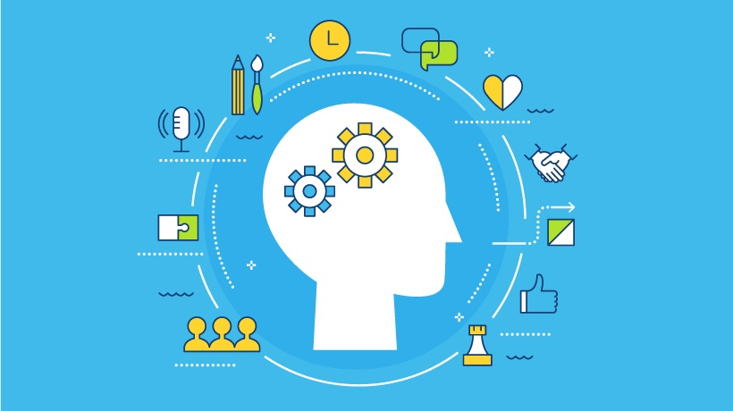

Soft Skills

O que são Soft Skills?
Soft skills são habilidades comportamentais e interpessoais que influenciam a forma como trabalhamos e interagimos com os outros. Diferente das hard skills (habilidades técnicas), elas estão relacionadas à personalidade, atitudes e capacidade de se comunicar e colaborar.
Principais Soft Skills
- Comunicação eficaz
- Trabalho em equipe
- Liderança
- Gestão de tempo
- Pensamento crítico
Benefícios de desenvolver soft skills
- Melhor relacionamento interpessoal
- Aumento da produtividade
- Maior empregabilidade
- Facilidade para lidar com mudanças
- Ambiente de trabalho mais colaborativo